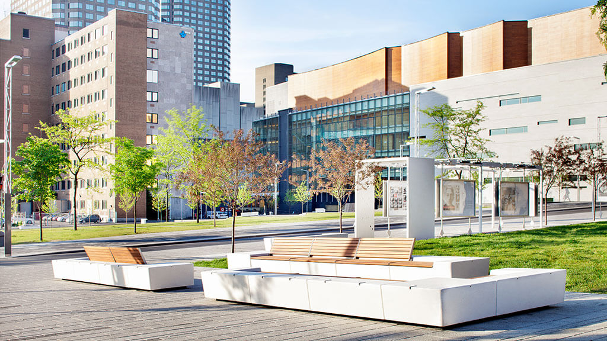

Montreal's Best Neighborhoods
1. Old Montreal
Today, the city's oldest district, founded as a fur trading post in 1605 by Samuel de Champlain, is a mélange of shops, bars and sidewalk cafes that attracts visitors and locals in equal measure. It's also become the hip place to crash on a Montreal sojourn, with hotels like Le Petit Hôtel and the new Hotel William Gray creatively adapting old buildings into cool places to stay. Thirty years ago, this wasn't the case. Many of the Vieux-Montréal structures were vacant, and most of the residents had fled to other areas, draining the neighborhood of life. But since listed historical buildings cannot be torn down, in recent years people began renovating them into modern business, entertainment and residential spaces. Among the neighborhood landmarks are the Notre-Dame Basilica, the Pointe-à-Callière museum of history and archeology and the Old Port (Vieux-Port) where bygone docks, warehouses and grain silos have morphed into venues for summer swimming, winter ice skating, food festivals and IMAX films.
2. Le Plateau-Mont-Royal
Life in the hip Plateau neighborhood revolves around the area's bars and cafes and the leafy Parc la Fontaine, with its serpentine lakes and albino squirrels. The neighborhood flanks the north side of Mont Royal and McGill University. Gentrification has transformed the Plateau into an artsy, upscale neighborhood where residents bike to work and school, "renaturalize" their alleyways with murals and gardens and restore the wrought iron stairs and colorful facades of their Victorian townhouses. A sort of east coast version of Berkeley, the Plateau is also renowned for the militant attitude of its mayor and many residents, especially when it comes to motor vehicles. Copious bike lanes, expanded sidewalks and more park land have greatly reduced traffic in the neighborhood and created one of Canada's most livable urban environments. "Rents have doubled in recent years," Thériault explained as we cruised down one of the Plateau's many bike lanes. "But cafe life and the number of patisseries has increased. And you can get food from different regions of France. Finding an apartment in Le Plateau is much harder now, but your chance of finding a good croissant has greatly improved."
3. Little Italy

TItalians have been in Montreal for nearly as long as the French, thanks to a 16th-century regiment recruited from northern Italy and sent to reinforce the king's army in New France. By the 1950s, the area around Jean-Talon Market was predominantly Italian and soon gained the moniker of Little Italy. While the community revolves around the red brick Church of the Madonna della Difesa (a national historic site), visitors flock to the vibrant market to sample all sorts of gourmet foods and drinks. Italian eateries also abound. But Little Italy's most unique culinary attraction is arguably Southern fried chicken at Dinette Triple Crown, which offers fully-stocked baskets for those who want to picnic across the street in Parc de la Petite-Italie.
4. Quartier des Spectacles
As the name suggests, "spectacles" of one sort or another are the raison d'être of this flashy district between the Old Town and McGill University. Though the district was conceived in the early 2000s as part of a concerted effort to boost Montreal's cultural life, it's now a bona fide inner city neighborhood that draws locals and visitors alike. The quarter revolves around the Place des Arts cultural complex, home to the Montreal Opera and Symphony Orchestra as well as the Grands Ballets Canadiens. It's also home to the Montreal Jazz Festival and Just For Laughs comedy fest. Among its many other cultural institutions are Montreal's central library, the Museum of Contemporary Art, the National Theatre School of Canada, the historic Club Soda music club and the Cinémathèque Québécoise.
Best time to visit Montreal
| Best Time |
| January |
| February |
| March |
| April |
| May |
| June |
| July |
| August |
| September |
| October |
| November |
| December |